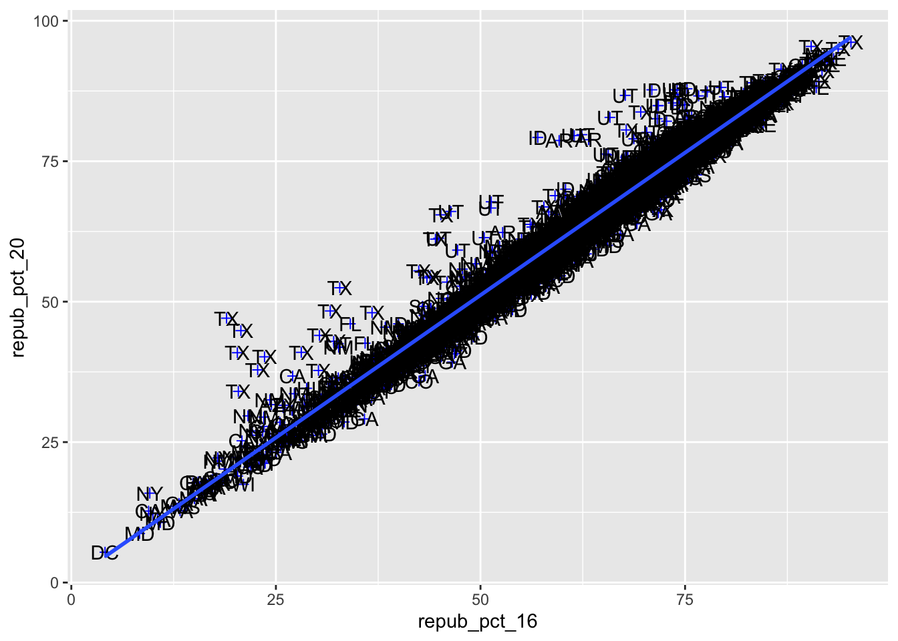
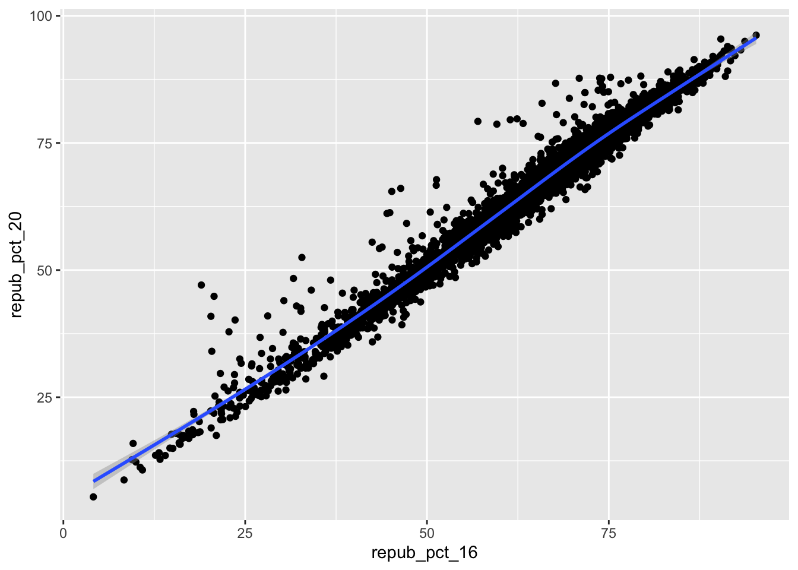
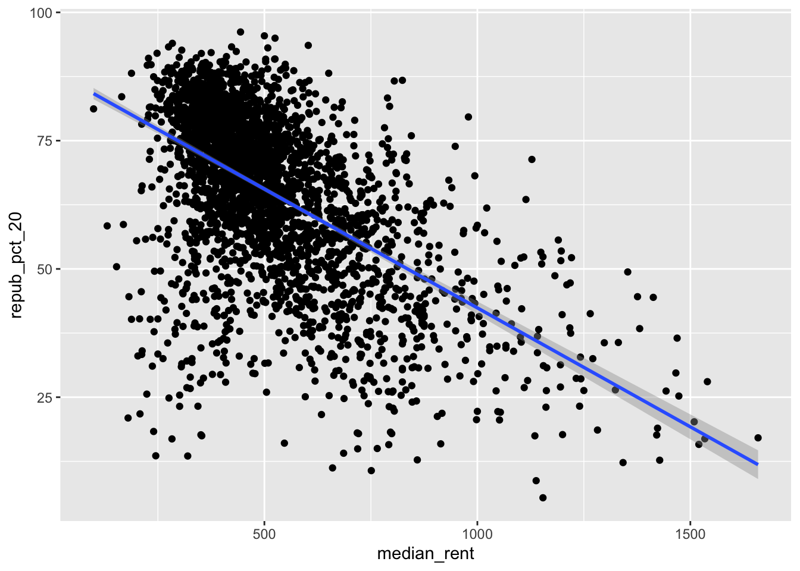
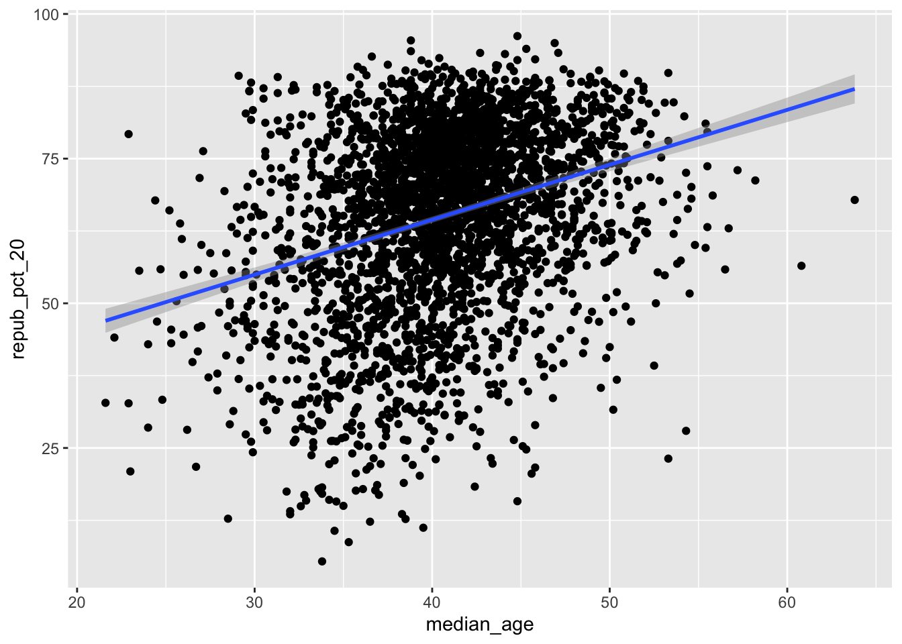
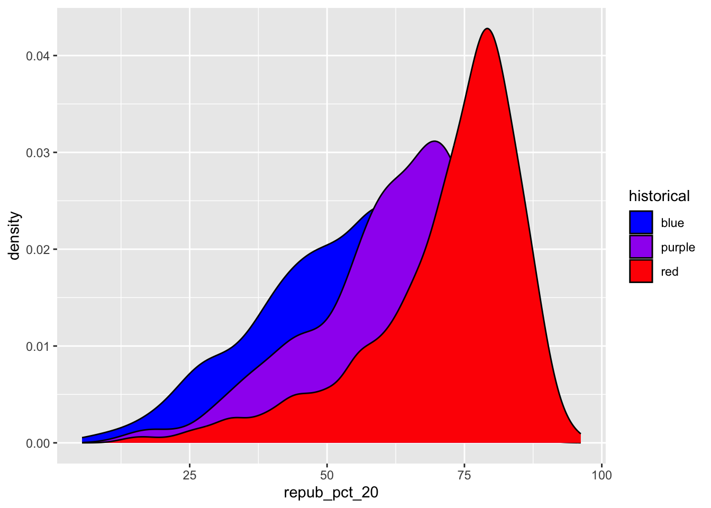
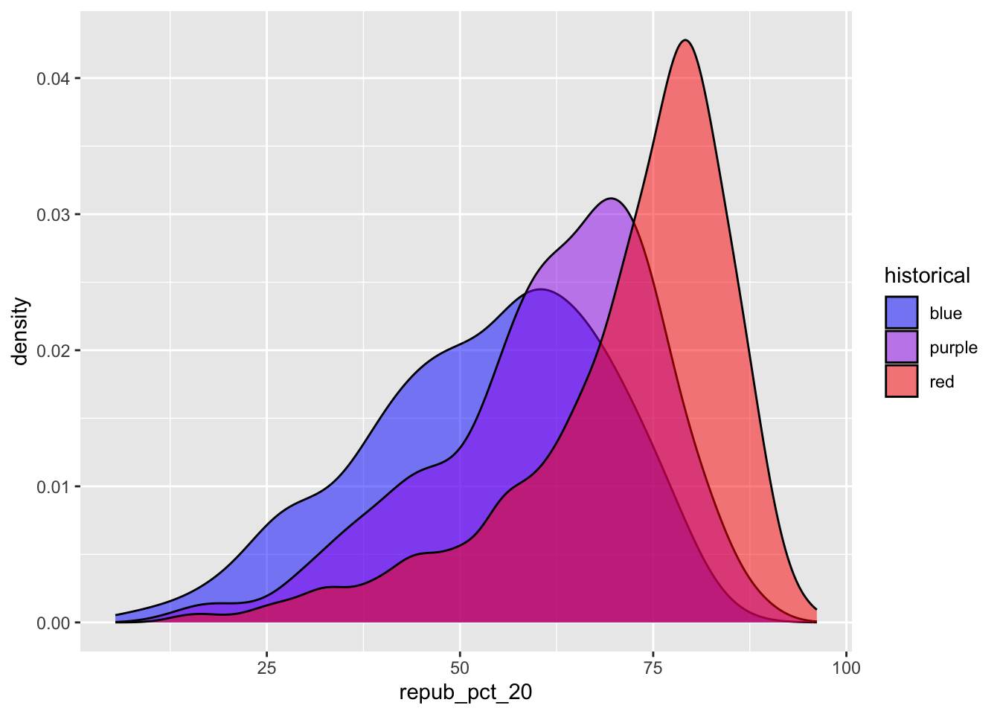
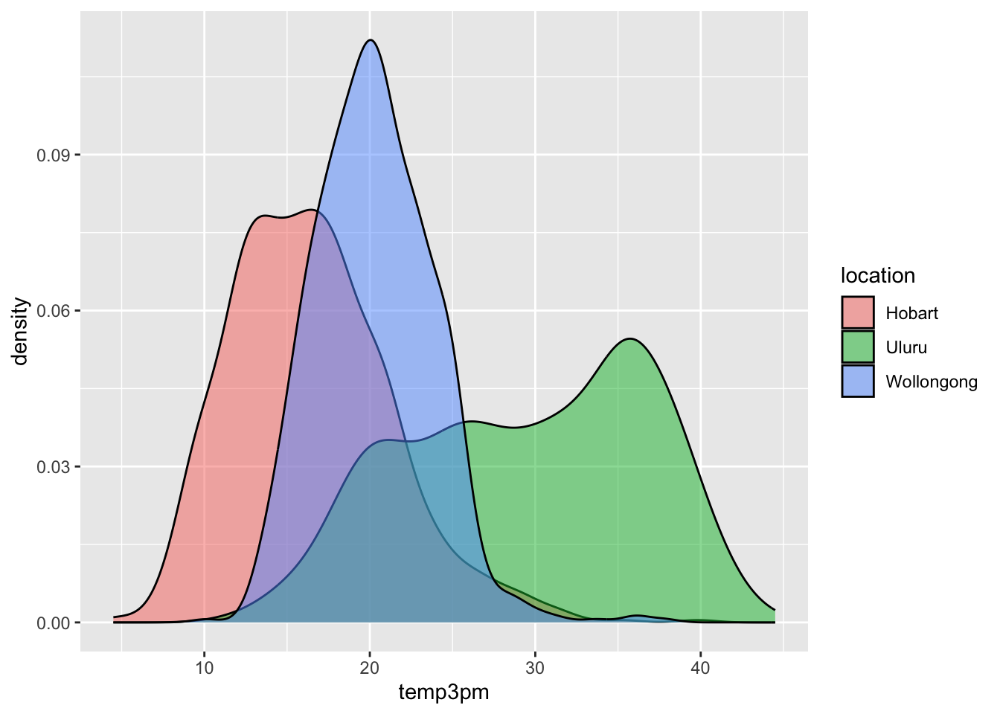

# Set up the plotting fram # How does this differn than the fram for our histogram of repub_pct_20 alone?ggplot(elections, aes(y = repub_pct_20, x = repub_pct_16))
# Add a layer of points for each ocunty # Take note of the geom! ggplot(elections, aes(y = repub_pct_20, x = repub_pct_16)) +geom_point()
#Change the shape of the points #What happens if you change the shape to another number ggplot(elections, aes(y=repub_pct_20, x = repub_pct_16)) +geom_point(shape =3, color ="blue") +geom_text(aes(label = state_abbr)) +geom_smooth(method ="lm")
`geom_smooth()` using formula = 'y ~ x'

The relationship between the two variables is positive and linear. This data visualization tells me that for the most part, counties across the U.S. voted similarly in 2016 and 2020. There are a few notable outliers, espcially several counties in Texas.
ggplot(elections, aes(y = repub_pct_20, x = repub_pct_16)) +geom_point() +geom_smooth()
`geom_smooth()` using method = 'gam' and formula = 'y ~ s(x, bs = "cs")'

#Scatterplot of repub_pct_20 vs. median_rent ggplot(elections, aes(y = repub_pct_20, x = median_rent)) +geom_point() +geom_smooth(method ="lm")
`geom_smooth()` using formula = 'y ~ x'

# Scatterplot of repub_pct_20 vs median_ageggplot(elections, aes(y = repub_pct_20, x = median_age)) +geom_point() +geom_smooth(method ="lm")
`geom_smooth()` using formula = 'y ~ x'

# Violin plotsggplot(elections, aes(y = repub_pct_20, x = historical)) +geom_violin()
# Boxplots ggplot(elections, aes(y = repub_pct_20, x = historical)) +geom_boxplot()
# The colors used don't match up with the blue, purple, red labels# The density plots are on top of each otherggplot(elections, aes(x = repub_pct_20, fill = historical)) +geom_density()
# scale_fill_manual "hard codes" or defines what colors to use for the fill categoriesggplot(elections, aes(x = repub_pct_20, fill = historical)) +geom_density() +scale_fill_manual(values =c("blue", "purple", "red"))

# alpha = 0.5 adds transparency# the closer alpha is to 0, the more transparent.# the closer alpha is to 1, the more opaque.ggplot(elections, aes(x = repub_pct_20, fill = historical)) +geom_density(alpha =0.5) +scale_fill_manual(values =c("blue", "purple", "red"))

# facet_wrap separates the density plots into "facets" for each historical groupggplot(elections, aes(x = repub_pct_20, fill = historical)) +geom_density() +scale_fill_manual(values =c("blue", "purple", "red")) +facet_wrap(~ historical)
# Let's try a similar grouping strategy with a histogram instead of density plot.# Why is this terrible?ggplot(elections, aes(x = repub_pct_20, fill = historical)) +geom_histogram(color ="white") +scale_fill_manual(values =c("blue", "purple", "red"))
`stat_bin()` using `bins = 30`. Pick better value with `binwidth`.
One pro of density plots relative to boxplots: doesn’t oversimplify the data / boil the data down to just 5 numbers.
Name one con of density plots relative to boxplots: boxplots can be easier to interpret
# A stacked bar plot# historical = x axis / bar categories# winner_20 = fills the barsggplot(elections, aes(x = historical, fill = winner_20)) +geom_bar()
# A faceted bar plotggplot(elections, aes(x = winner_20)) +geom_bar() +facet_wrap(~ historical)
# A side-by-side bar plot# Note the new argument to geom_barggplot(elections, aes(x = historical, fill = winner_20)) +geom_bar(position ="dodge")
# A proportional bar plot# Note the new argument to geom_barggplot(elections, aes(x = historical, fill = winner_20)) +geom_bar(position ="fill")
weather <-read.csv("https://mac-stat.github.io/data/weather_3_locations.csv")# How do 3pm temperatures (temp3pm) differ by location?ggplot(weather, aes(x = temp3pm, fill = location)) +geom_density(alpha =0.5)
Warning: Removed 19 rows containing non-finite outside the scale range
(`stat_density()`).

ggplot(weather, aes(y = temp3pm, x = location)) +geom_boxplot()
Warning: Removed 19 rows containing non-finite outside the scale range
(`stat_boxplot()`).
# How might we predict the 3pm temperature (temp3pm) by the 9am temperature (temp9am)?ggplot(weather, aes(y = temp3pm, x = temp9am)) +geom_point()
Warning: Removed 27 rows containing missing values or values outside the scale range
(`geom_point()`).
# How do the number of rainy days (raintoday) differ by location?ggplot(weather, aes(x = location, fill = raintoday)) +geom_bar()
Source Code
---title: "Bivariate Viz"---Use this file for practice with the **bivariate viz** in-class activity. Refer to the class website for details.```{r}# Load dataelections <-read.csv("https://mac-stat.github.io/data/election_2020_county.csv")# Check it outhead(elections)```Part A: I guess that the Republican candidate won 73% of counties. ```{r}library(tidyverse)ggplot(elections, aes(x = winner_20)) +geom_bar()``````{r}ggplot(elections, aes(x=repub_pct_20)) +geom_histogram(color ="white")``````{r}ggplot(elections, aes(x = repub_pct_20)) +geom_density()``````{r}# Set up the plotting fram # How does this differn than the fram for our histogram of repub_pct_20 alone?ggplot(elections, aes(y = repub_pct_20, x = repub_pct_16))``````{r}# Add a layer of points for each ocunty # Take note of the geom! ggplot(elections, aes(y = repub_pct_20, x = repub_pct_16)) +geom_point()``````{r}#Change the shape of the points #What happens if you change the shape to another number ggplot(elections, aes(y=repub_pct_20, x = repub_pct_16)) +geom_point(shape =3, color ="blue") +geom_text(aes(label = state_abbr)) +geom_smooth(method ="lm")```The relationship between the two variables is positive and linear. This data visualization tells me that for the most part, counties across the U.S. voted similarly in 2016 and 2020. There are a few notable outliers, espcially several counties in Texas.```{r}ggplot(elections, aes(y = repub_pct_20, x = repub_pct_16)) +geom_point() +geom_smooth()``````{r}#Scatterplot of repub_pct_20 vs. median_rent ggplot(elections, aes(y = repub_pct_20, x = median_rent)) +geom_point() +geom_smooth(method ="lm") ``````{r}# Scatterplot of repub_pct_20 vs median_ageggplot(elections, aes(y = repub_pct_20, x = median_age)) +geom_point() +geom_smooth(method ="lm") ``````{r}# Violin plotsggplot(elections, aes(y = repub_pct_20, x = historical)) +geom_violin()``````{r}# Boxplots ggplot(elections, aes(y = repub_pct_20, x = historical)) +geom_boxplot()``````{r}# The colors used don't match up with the blue, purple, red labels# The density plots are on top of each otherggplot(elections, aes(x = repub_pct_20, fill = historical)) +geom_density()``````{r}# scale_fill_manual "hard codes" or defines what colors to use for the fill categoriesggplot(elections, aes(x = repub_pct_20, fill = historical)) +geom_density() +scale_fill_manual(values =c("blue", "purple", "red"))``````{r}# alpha = 0.5 adds transparency# the closer alpha is to 0, the more transparent.# the closer alpha is to 1, the more opaque.ggplot(elections, aes(x = repub_pct_20, fill = historical)) +geom_density(alpha =0.5) +scale_fill_manual(values =c("blue", "purple", "red"))``````{r}# facet_wrap separates the density plots into "facets" for each historical groupggplot(elections, aes(x = repub_pct_20, fill = historical)) +geom_density() +scale_fill_manual(values =c("blue", "purple", "red")) +facet_wrap(~ historical)``````{r}# Let's try a similar grouping strategy with a histogram instead of density plot.# Why is this terrible?ggplot(elections, aes(x = repub_pct_20, fill = historical)) +geom_histogram(color ="white") +scale_fill_manual(values =c("blue", "purple", "red"))```One pro of density plots relative to boxplots: doesn’t oversimplify the data / boil the data down to just 5 numbers.Name one con of density plots relative to boxplots: boxplots can be easier to interpret```{r}# A stacked bar plot# historical = x axis / bar categories# winner_20 = fills the barsggplot(elections, aes(x = historical, fill = winner_20)) +geom_bar()``````{r}# A faceted bar plotggplot(elections, aes(x = winner_20)) +geom_bar() +facet_wrap(~ historical)``````{r}# A side-by-side bar plot# Note the new argument to geom_barggplot(elections, aes(x = historical, fill = winner_20)) +geom_bar(position ="dodge")``````{r}# A proportional bar plot# Note the new argument to geom_barggplot(elections, aes(x = historical, fill = winner_20)) +geom_bar(position ="fill")``````{r}weather <-read.csv("https://mac-stat.github.io/data/weather_3_locations.csv")# How do 3pm temperatures (temp3pm) differ by location?ggplot(weather, aes(x = temp3pm, fill = location)) +geom_density(alpha =0.5)``````{r}ggplot(weather, aes(y = temp3pm, x = location)) +geom_boxplot()``````{r}# How might we predict the 3pm temperature (temp3pm) by the 9am temperature (temp9am)?ggplot(weather, aes(y = temp3pm, x = temp9am)) +geom_point()``````{r}# How do the number of rainy days (raintoday) differ by location?ggplot(weather, aes(x = location, fill = raintoday)) +geom_bar()```